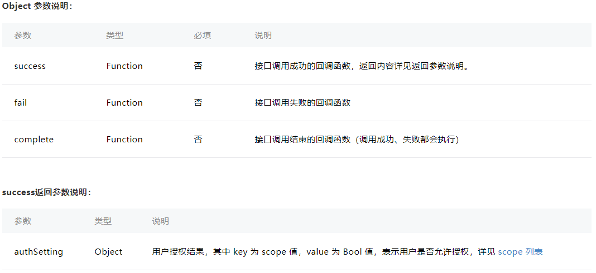
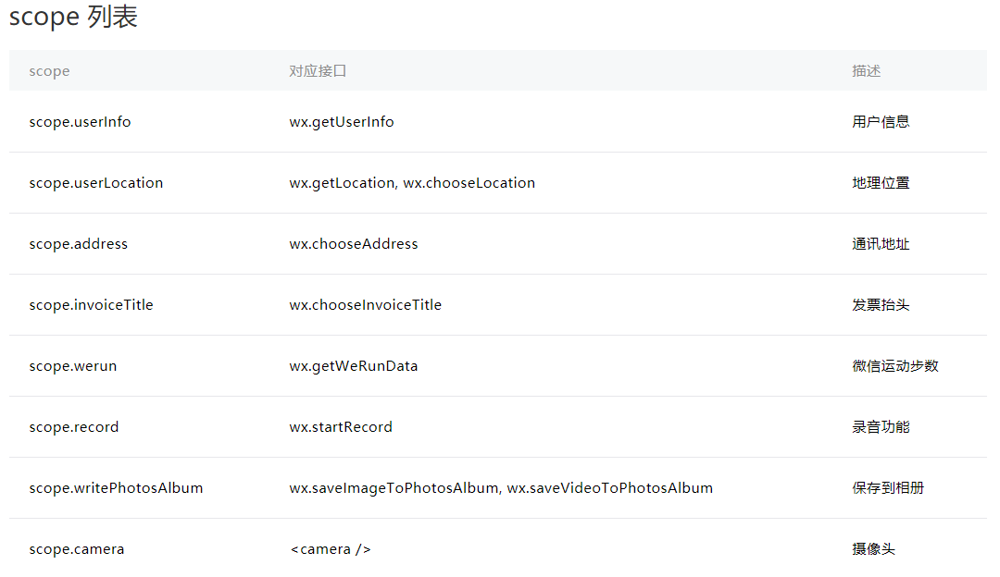

【js-11】
小程序授权机制
分享人：张乾
目录
1.背景介绍
2.知识剖析
3.常见问题
4.解决方案
5.编码实战
6.扩展思考
7.参考文献
8.更多讨论
1.背景介绍
关于小程序授权
小程序里面的授权，是对特定接口的授权。部分接口需要获得用户授权同意后才能调用。此类接口调用时：
如果用户未接受或拒绝过此权限，会弹窗询问用户，用户点击同意后方可调用接口；
如果用户已授权，可以直接调用接口；
如果用户已拒绝授权，则短期内不会出现弹窗，而是直接进入接口 fail 回调。请开发者兼容用户拒绝授权的场景。

2.知识剖析
获取授权信息
开发者可以使用 wx.getSetting 获取用户当前的授权状态。

wx.getSetting({
success: (res)=>{
console.log(res)
}
})
打开设置界面
用户可以在小程序设置界面（右上角 - 关于 - 右上角 - 设置）中控制对该小程序的授权状态。
开发者可以调用 wx.openSetting 打开设置界面，引导用户开启授权。
wx.openSetting({
success: (res)=>{
console.log(res)
}
})
提前发起授权请求
开发者可以使用 wx.authorize 在调用需授权 API 之前，提前向用户发起授权请求。
授权列表
3.常见问题
如果拒绝了授权，该怎么重新获取授权？
4.解决方案
5.代码实战
6.拓展思考
7.参考文献
参考一:微信小程序设计指南
8.更多讨论
鸣谢
感谢大家观看
BY : 张乾